Professor: Fabrício Quintanilha
Alunos (Dupla): Bruno Hideki Uemura BI3026191 e José Henrique de Lima BI3040925
Sistema: LUNAR INTEL – Sistema Imobiliário Inteligente
Data: 12 de novembro de 2026 (entrega da implementação)
Repositório: {{LINK_REPO}}
Aplicação web: {{LINK_APP}}
LUNAR INTEL – Sistema Imobiliário Inteligente
Imobiliária / Corretagem e Gestão de Imóveis
Atualmente, o mercado imobiliário brasileiro apresenta lacunas operacionais significativas que prejudicam a experiência de compra e a eficiência comercial:
O LUNAR INTEL é uma plataforma web completa orientada a objetos que centraliza e integra todo o ciclo de prospecção, qualificação financeira e negociação imobiliária em um único ecossistema. O sistema calcula automaticamente a capacidade de compra respeitando o comprometimento máximo prudencial de 30% da renda, cruza esse resultado com a base de dados e exibe apenas imóveis que se enquadram no teto financeiro do comprador. A plataforma também conta com gestão centralizada de imóveis, controle de acesso baseado em perfis (RBAC), módulo de agendamentos de visitas e painéis gerenciais.
Desenvolver um sistema web orientado a objetos que integre simulação de financiamento imobiliário, gestão de imóveis e agendamento de visitas, proporcionando uma experiência fluida e inteligente para compradores e corretores, otimizando o processo de compra e reduzindo o tempo operacional envolvido em cada etapa.
O tema foi escolhido por solucionar um problema real de assimetria de informações e ineficiência operacional no mercado imobiliário. Além da relevância comercial, o projeto apresenta a complexidade ideal para a aplicação prática e aprofundada dos conceitos de Orientação a Objetos, exigindo estruturação de herança de usuários, composição de endereços, interações entre objetos e controle de estados (como o ciclo de vida de um agendamento), garantindo um sistema com processos de negócio robustos que superam simples telas de cadastro isoladas.
O cliente acessa o sistema, realiza uma simulação de financiamento com base em seus dados socioeconômicos e obtém uma lista de imóveis estritamente compatíveis com seu orçamento. Em seguida, o cliente seleciona os imóveis de interesse e solicita uma visita presencial. O corretor responsável pelo imóvel recebe a solicitação em seu painel, confirma a data e o horário, e realiza o atendimento. Após a visita, o corretor atualiza o status no sistema, registrando a evolução da negociação ou o fechamento da venda.
| Objeto / Classe | Tipo / Relação | Descrição e Responsabilidade |
|---|---|---|
| Usuario | Superclasse | Entidade base com acesso ao sistema, contendo dados de identificação e autenticação. |
| Cliente | Subclasse | Representa o comprador; armazena atributos como renda mensal, idade e patrimônio. |
| Corretor | Subclasse | Representa o profissional imobiliário; encapsula registro CRECI e agenda de visitas. |
| Administrador | Subclasse | Gestão da plataforma com permissões de auditoria e emissão de relatórios. |
| Imovel | Entidade | Propriedade para venda, contendo especificações técnicas, preço e status. |
| Endereco | Composição | Encapsula os dados de geolocalização pertencentes ao imóvel. |
| Simulacao | Entidade | Registra os parâmetros informados e os resultados calculados da capacidade de compra. |
| Financiamento | Associação | Modela variáveis como taxa de juros, prazo em meses e sistema de amortização. |
| Agendamento | Associação | Compromisso que vincula Cliente, Corretor e Imóvel com controle de status e tempo. |
Observação: a classe Financiamento foi removida na Atividade 3; sua lógica foi incorporada ao cálculo da capacidade de compra.
Os requisitos funcionais definem as ações, comportamentos e serviços específicos que a plataforma LUNAR INTEL deve prover aos seus usuários, distribuídos pelos módulos do sistema.
| Código | Descrição do Requisito |
|---|---|
| RF01 | Permitir o autocadastro de usuários mediante fornecimento de nome completo, e-mail, CPF, telefone e senha de acesso. |
| RF02 | Autenticar o acesso de usuários por meio de credenciais válidas (e-mail e senha cadastrados). |
| RF03 | Disponibilizar fluxo para recuperação de senha com envio de link/código de verificação por e-mail. |
| RF04 | Permitir a atualização dos dados cadastrais pelo próprio usuário autenticado. |
| RF05 | Possibilitar o encerramento ou inativação voluntária da conta pelo próprio usuário. |
| Código | Descrição do Requisito |
|---|---|
| RF06 | Permitir o registro do perfil financeiro do cliente, englobando renda bruta mensal, idade e saldo disponível de entrada (poupança/FGTS). |
| RF07 | Realizar a simulação de financiamento imobiliário calculando a capacidade máxima de aquisição com base nos dados informados. |
| RF08 | Apresentar catálogo dinâmico de imóveis compatíveis com o teto financeiro calculado na simulação. |
| RF09 | Exibir ficha técnica completa do imóvel selecionado, incluindo galeria de fotos, especificações estruturais, endereço e valor de venda. |
| RF10 | Permitir o envio de solicitação de agendamento de visita presencial para um imóvel selecionado. |
| RF11 | Manter histórico acessível das simulações financeiras realizadas pelo cliente. |
| RF12 | Disponibilizar painel de acompanhamento de status das visitas (Pendente, Confirmada, Realizada, Cancelada). |
| RF13 | Permitir a aplicação de filtros de busca por tipologia (casa, apartamento, loft), dormitórios, banheiros e localização. |
| RF14 | Permitir ao cliente favoritar imóveis de interesse para acesso rápido posterior. |
| RF15 | Possibilitar a remoção de imóveis previamente salvos na lista de favoritos. |
| Código | Descrição do Requisito |
|---|---|
| RF16 | Permitir o credenciamento de corretores mediante validação estrutural do número de registro profissional no CRECI. |
| RF17 | Permitir a inclusão de novos imóveis com especificações técnicas, descritivo comercial, fotos e precificação. |
| RF18 | Permitir a edição completa de dados e mídias dos imóveis pertencentes ao portfólio do próprio corretor. |
| RF19 | Possibilitar a inativação ou remoção de imóveis quando negociados ou retirados de comercialização. |
| RF20 | Disponibilizar dashboard individual com métricas de desempenho, estoque de unidades e volume de visitas recebidas. |
| RF21 | Listar as solicitações de visita recebidas de clientes para os imóveis vinculados ao corretor. |
| RF22 | Permitir a confirmação, proposta de reagendamento ou cancelamento fundamentado de visitas solicitadas. |
| RF23 | Permitir a visualização do perfil de contato e informações essenciais dos clientes solicitantes de visita. |
| RF24 | Possibilitar a alteração do status do imóvel para "Vendido", formalizando o encerramento do ciclo de captação. |
| RF25 | Disponibilizar mecanismo de busca avançada e ordenação sobre a base de imóveis do portfólio. |
| Código | Descrição do Requisito |
|---|---|
| RF26 | Permitir a administração e supervisão global de todas as contas de usuários cadastradas no sistema. |
| RF27 | Gerenciar o status de habilitação (ativação/bloqueio) das contas operacionais de corretores. |
| RF28 | Gerar e exibir relatórios consolidados de vendas, conversão de visitas e produtividade da equipe comercial. |
| RF29 | Prover visão integrada de todos os imóveis cadastrados em nível institucional. |
| RF30 | Apresentar indicadores executivos globais, incluindo taxa média de conversão e ticket médio de transações. |
Os requisitos não funcionais estabelecem os critérios de qualidade, restrições arquiteturais, desempenho e segurança adotados no desenvolvimento da solução.
| Código | Categoria | Descrição do Requisito |
|---|---|---|
| RNF01 | Usabilidade / Interface | A interface deve ser totalmente responsiva, adaptando-se de forma fluida a computadores desktop, tablets e smartphones. |
| RNF02 | Desempenho | O tempo de resposta para operações comuns (consultas, filtros e simulações) não deve exceder 3 segundos em condições normais de uso. |
| RNF03 | Segurança | Senhas devem ser persistidas exclusivamente sob formato de hash criptográfico seguro (e.g., BCrypt/Argon2), garantindo a proteção a dados sensíveis. |
| RNF04 | Arquitetura de Software | A implementação deve obedecer aos princípios e boas práticas da Programação Orientada a Objetos (POO), com divisão clara de responsabilidades em pacotes e camadas. |
| RNF05 | Persistência de Dados | A retenção de dados deve ser garantida via serialização estruturada em JSON ou banco de dados relacional (SQL). |
| RNF06 | Tratamento de Exceções | O sistema deve apresentar mensagens de erro amigáveis ao usuário, suprimindo stacktraces ou detalhes internos de infraestrutura. |
| RNF07 | Auditoria e Rastreabilidade | Eventos críticos (cadastros, alterações de status e autenticações) devem gerar logs de auditoria contendo carimbo temporal e identificador do ator. |
| RNF08 | Portabilidade | Compatibilidade plena com as versões estáveis dos principais navegadores de mercado (Google Chrome, Mozilla Firefox, Microsoft Edge e Apple Safari). |
As regras de negócio descrevem as políticas, validações e restrições operacionais que regem o comportamento da aplicação.
| Código | Enunciado da Regra de Negócio |
|---|---|
| RN01 | Comprometimento de Renda: o valor estimado da parcela do financiamento não pode ultrapassar o limite de 30% da renda mensal bruta comprovada pelo cliente. |
| RN02 | Conclusão de Venda: a transição de um imóvel para o status "Vendido" exige que todos os seus agendamentos vinculados estejam previamente concluídos ("Realizado") ou arquivados ("Cancelado"). |
| RN03 | Disponibilidade para Visita: visitas somente podem ser solicitadas ou confirmadas para imóveis em estado estritamente "Disponível". |
| RN04 | Limite de Agendamentos Simultâneos: um mesmo cliente não pode manter simultaneamente mais de 3 solicitações de visita ativas (pendentes ou confirmadas), considerando todos os imóveis.* |
| RN05 | Faixa Etária de Simulação: a simulação de financiamento exige idade mínima de 18 anos e idade máxima de 70 anos (considerando a limitação do prazo de amortização bancária). |
| RN06 | Isolamento de Responsabilidade: um corretor possui prerrogativa de alteração e exclusão exclusivamente sobre os imóveis cadastrados sob sua própria titularidade. |
| RN07 | Segregação de Papéis Administrativos: contas com perfil de Administrador exercem exclusivamente atribuições gerenciais, de parametrização e auditoria, sendo vedada a intermediação direta de visitas. |
| RN08 | Proporção Máxima de Entrada: o montante de recursos próprios (Poupança/FGTS) aportado como entrada na simulação é limitado a 80% do valor de avaliação do bem. |
| RN09 | Intervalo Mínimo de Recorrência: é bloqueada a abertura de novo agendamento para o mesmo imóvel caso o cliente possua visita em aberto ou agendada nos últimos 7 dias. |
| RN10 | Notificação de Eventos: qualquer alteração de status em visitas dispara notificações automáticas e simultâneas ao cliente interessado e ao corretor encarregado. |
| RN11 | Validação do Registro CRECI: o cadastro profissional de corretores requer validação do formato do registro CRECI: número de 4 a 6 dígitos, hífen e sufixo de 1 ou 2 letras (ex.: 12345-F).* |
| RN12 | Visibilidade de Imóveis Inativos: imóveis inativados ou despublicados são omitidos de forma irrestrita dos mecanismos de busca e recomendações da simulação. |
* Redação revisada na implementação. A versão anterior da RN04 limitava as visitas "para a mesma unidade imobiliária", o que nunca seria atingido, pois a RN09 já impede uma segunda visita em aberto ao mesmo imóvel. A RN11 citava "sufixo numérico", mas o padrão do CRECI usa sufixo de letra.
Descrição: usuário final interessado na aquisição de imóveis residenciais ou comerciais. Utiliza o sistema para qualificação de crédito, busca personalizada e contato comercial.
Atribuições Principais: realização de simulações de financiamento; navegação em catálogo qualificado; gestão de imóveis favoritos; solicitação de visitas presenciais.
Permissões Concedidas: cadastro/login; edição de dados cadastrais próprios (exceto CPF); inativação de conta própria; visualização pública do portfólio; envio de solicitações de visita; consulta ao próprio histórico financeiro.
Restrições: sem acesso a registros de terceiros, painéis gerenciais ou operações de inclusão/edição de imóveis.
Descrição: profissional imobiliário devidamente credenciado junto ao CRECI, responsável pela prospecção de propriedades e condução do relacionamento com potenciais compradores.
Atribuições Principais: cadastro e manutenção de imóveis; gestão de agenda de visitas; atendimento e triagem de leads qualificados.
Permissões Concedidas: gestão de anúncios próprios (CRUD completo); recebimento e tratamento de propostas de agendamento; visualização de métricas individuais de captação; alteração de disponibilidade e status de venda.
Restrições: não possui permissão para editar anúncios de outros corretores, intervir em configurações gerais do sistema ou realizar simulações em nome de clientes.
Descrição: gestor responsável pela governança da plataforma, moderação de contas, segurança operacional e extração de inteligência de mercado.
Atribuições Principais: supervisão de acessos; análise de indicadores estratégicos; manutenção da integridade da base cadastral e auditoria técnica.
Permissões Concedidas: gestão de contas de usuários (ativação, suspensão e exclusão); acesso aos relatórios consolidados de vendas e conversão; visualização global do catálogo; inspeção de logs do sistema.
Restrições: não participa da operação direta de agendamento de visitas nem atua como intermediário nas negociações.
O fluxo primordial do LUNAR INTEL compreende o ciclo integrado de qualificação financeira, recomendação orientada a dados e agendamento de visitas. A integração entre as etapas garante eficiência operacional à imobiliária e assertividade aos clientes.
| Requisito Funcional | Cliente | Corretor | Administrador |
|---|---|---|---|
| RF01 — Cadastro de Usuários | Permitido | Permitido | Não se aplica |
| RF02 — Autenticação de Acesso | Permitido | Permitido | Permitido |
| RF03 — Recuperação de Senha | Permitido | Permitido | Não se aplica |
| RF04 — Edição de Dados Cadastrais | Permitido | Permitido | Permitido |
| RF05 — Encerramento de Conta | Permitido | Permitido | Não se aplica |
| RF06 a RF15 — Módulo Comprador | Permitido | Não se aplica | Não se aplica |
| RF16 a RF25 — Módulo Corretor | Não se aplica | Permitido | Não se aplica |
| RF26 a RF30 — Módulo Administrativo | Não se aplica | Não se aplica | Permitido |
A especificação dos requisitos do projeto LUNAR INTEL consolida a transição do entendimento do problema para a fase de modelagem orientada a objetos. Os principais resultados alcançados compreendem:
Com base no levantamento de requisitos realizado na Atividade 2, esta etapa tem como objetivo identificar as principais classes do sistema LUNAR INTEL. As classes foram definidas a partir da abstração do domínio imobiliário, considerando os perfis de usuários, as entidades envolvidas no processo principal e as regras de negócio estabelecidas. Foram identificadas 10 classes principais, equilibrando completude e simplicidade.
As tabelas desta atividade registram a modelagem inicial. As alterações feitas durante a implementação estão descritas na Atividade 4 (diagrama atualizado) e na seção de Implementação.
| # | Classe | Tipo |
|---|---|---|
| 1 | Usuario | Superclasse (Abstrata) |
| 2 | Cliente | Subclasse de Usuario |
| 3 | Corretor | Subclasse de Usuario |
| 4 | Administrador | Subclasse de Usuario |
| 5 | Imovel | Entidade |
| 6 | Endereco | Classe de Composição |
| 7 | Simulacao | Entidade |
| 8 | Agendamento | Entidade |
| 9 | Favorito | Entidade Associativa |
| 10 | Notificacao | Entidade |
Finalidade: representar qualquer pessoa que acessa o sistema, servindo como base para a hierarquia de herança das classes Cliente, Corretor e Administrador.
Responsabilidade: gerenciar informações básicas de identificação, autenticação e controle de acesso.
| Atributo | Tipo | Descrição |
|---|---|---|
| id | int | Identificador único do usuário |
| nome | String | Nome completo do usuário |
| String | E-mail para login e contato | |
| cpf | String | Cadastro de Pessoa Física |
| telefone | String | Número de telefone |
| senha | String | Hash da senha de acesso |
| dataCadastro | LocalDateTime | Data e hora do cadastro |
| ativo | boolean | Indica se a conta está ativa |
| Método | Retorno | Parâmetros | Descrição |
|---|---|---|---|
| autenticar() | boolean | String email, String senha | Verifica as credenciais |
| atualizarDados() | void | Usuario dadosAtualizados | Atualiza informações |
| alterarSenha() | void | String senhaAntiga, String senhaNova | Troca de senha |
| inativarConta() | void | - | Inativa a conta |
Finalidade: representar o comprador de imóveis, estendendo a classe Usuario com atributos financeiros específicos.
Responsabilidade: gerenciar dados financeiros, simulações realizadas, favoritos e agendamentos do comprador.
| Atributo | Tipo | Descrição |
|---|---|---|
| rendaMensal | double | Renda bruta mensal declarada |
| idade | int | Idade do cliente (18 a 70 anos) |
| poupanca | double | Saldo disponível para entrada |
| fgts | double | Saldo do FGTS disponível |
| profissao | String | Profissão do cliente |
| Método | Retorno | Parâmetros | Descrição |
|---|---|---|---|
| calcularCapacidadeCompra() | double | - | Calcula o valor máximo do imóvel (RN01) |
| obterParcelaMaxima() | double | - | Calcula 30% da renda mensal |
| validarIdade() | boolean | - | Verifica idade entre 18 e 70 anos (RN05) |
| getValorEntradaTotal() | double | - | Retorna poupança + FGTS |
| listarFavoritos() | List<Imovel> | - | Retorna imóveis favoritos |
| listarSimulacoes() | List<Simulacao> | - | Retorna histórico de simulações |
Finalidade: representar o profissional imobiliário credenciado no CRECI, responsável pela gestão de imóveis e atendimento aos clientes.
Responsabilidade: gerenciar portfólio de imóveis, receber e tratar solicitações de visita.
| Atributo | Tipo | Descrição |
|---|---|---|
| creci | String | Número de registro no CRECI |
| especialidade | String | Área de atuação |
| totalVendas | int | Quantidade de vendas realizadas |
| comissaoPercentual | double | Percentual de comissão |
| Método | Retorno | Parâmetros | Descrição |
|---|---|---|---|
| cadastrarImovel() | Imovel | Imovel imovel | Cadastra novo imóvel |
| editarImovel() | void | Imovel imovel | Edita imóvel existente |
| inativarImovel() | void | int idImovel | Inativa um imóvel |
| listarImoveis() | List<Imovel> | - | Retorna todos os imóveis do corretor |
| confirmarVisita() | Agendamento | int idAgendamento | Confirma uma visita |
| reagendarVisita() | Agendamento | int idAgendamento, LocalDateTime novaData | Reagenda visita |
| cancelarVisita() | void | int idAgendamento, String motivo | Cancela visita |
| marcarImovelVendido() | void | int idImovel, double valorVenda | Marca imóvel como vendido (RN02) |
| validarCRECI() | boolean | String creci | Valida formato do CRECI (RN11) |
Finalidade: representar o gestor da plataforma, com permissões de auditoria, gestão de usuários e acesso a relatórios gerenciais.
Responsabilidade: supervisionar a operação da plataforma e gerenciar usuários.
| Atributo | Tipo | Descrição |
|---|---|---|
| nivelAcesso | String | Nível de acesso (SUPER, GERENCIAL) |
| Método | Retorno | Parâmetros | Descrição |
|---|---|---|---|
| gerenciarUsuarios() | void | int idUsuario, String acao | Ativa/inativa usuários |
| gerarRelatorioVendas() | String | Periodo periodo | Gera relatório de vendas |
| visualizarTodosImoveis() | List<Imovel> | - | Retorna todos os imóveis |
Finalidade: representar uma propriedade imobiliária disponível para venda.
Responsabilidade: armazenar informações detalhadas do imóvel e seu relacionamento com o corretor.
| Atributo | Tipo | Descrição |
|---|---|---|
| id | int | Identificador único |
| titulo | String | Título descritivo |
| descricao | String | Descrição completa |
| preco | double | Preço de venda |
| areaTotal | double | Área total em m² |
| quartos | int | Número de quartos |
| banheiros | int | Número de banheiros |
| tipo | String | Casa, Apartamento, Loft |
| status | String | Disponível, Vendido, Inativo |
| endereco | Endereco | Objeto Endereco (composição) |
| corretor | Corretor | Corretor responsável (associação) |
| imagens | List<String> | Lista de URLs das imagens |
| Método | Retorno | Parâmetros | Descrição |
|---|---|---|---|
| isDisponivel() | boolean | - | Verifica se está disponível |
| marcarComoVendido() | void | double valor | Marca como vendido (RN02) |
| inativar() | void | - | Inativa o imóvel (RN12) |
| atualizarPreco() | void | double novoPreco | Atualiza o preço |
| getDadosCompletos() | String | - | Retorna resumo completo |
Finalidade: representar a localização geográfica do imóvel, encapsulando todos os dados de endereço.
Responsabilidade: armazenar e validar informações de endereço de forma padronizada.
| Atributo | Tipo | Descrição |
|---|---|---|
| logradouro | String | Rua, avenida ou praça |
| numero | String | Número do imóvel |
| complemento | String | Complemento (apto, bloco etc.) |
| bairro | String | Bairro |
| cidade | String | Cidade |
| estado | String | Estado (UF) |
| cep | String | Código Postal |
| Método | Retorno | Parâmetros | Descrição |
|---|---|---|---|
| getEnderecoCompleto() | String | - | Retorna o endereço completo formatado |
| validarCEP() | boolean | String cep | Valida o formato do CEP |
Finalidade: registrar uma simulação financeira realizada por um cliente.
Responsabilidade: persistir o histórico de simulações e fornecer dados para análises.
| Atributo | Tipo | Descrição |
|---|---|---|
| id | int | Identificador único |
| cliente | Cliente | Cliente que realizou (associação) |
| dataSimulacao | LocalDateTime | Data da simulação |
| rendaInformada | double | Renda informada |
| idadeInformada | int | Idade informada |
| entradaInformada | double | Entrada informada |
| capacidadeCompra | double | Valor máximo calculado (RN01) |
| imoveisEncontrados | List<Imovel> | Imóveis compatíveis |
| Método | Retorno | Parâmetros | Descrição |
|---|---|---|---|
| calcularCapacidade() | void | - | Calcula a capacidade de compra |
| getImoveisCompativeis() | List<Imovel> | List<Imovel> portfolio | Filtra imóveis compatíveis |
| getResumo() | String | - | Retorna resumo da simulação |
Finalidade: representar o agendamento de uma visita presencial a um imóvel.
Responsabilidade: gerenciar o ciclo de vida da visita.
| Atributo | Tipo | Descrição |
|---|---|---|
| id | int | Identificador único |
| cliente | Cliente | Cliente solicitante (associação) |
| corretor | Corretor | Corretor responsável (associação) |
| imovel | Imovel | Imóvel a ser visitado (associação) |
| dataSolicitacao | LocalDateTime | Data da solicitação |
| dataVisita | LocalDateTime | Data e hora agendada |
| status | String | Pendente, Confirmado, Realizado, Cancelado |
| observacoes | String | Observações gerais |
| Método | Retorno | Parâmetros | Descrição |
|---|---|---|---|
| confirmar() | void | - | Confirma o agendamento |
| realizar() | void | - | Marca como realizada |
| cancelar() | void | String motivo | Cancela o agendamento |
| reagendar() | void | LocalDateTime novaData | Reagenda a visita |
| validarAgendamento() | boolean | - | Valida o agendamento (RN03, RN04, RN09) |
Finalidade: representar a relação de favoritismo entre um cliente e um imóvel.
Responsabilidade: armazenar os imóveis que um cliente marcou como favorito.
| Atributo | Tipo | Descrição |
|---|---|---|
| id | int | Identificador único |
| cliente | Cliente | Cliente que favoritou (associação) |
| imovel | Imovel | Imóvel favoritado (associação) |
| dataAdicao | LocalDateTime | Data em que foi adicionado |
| Método | Retorno | Parâmetros | Descrição |
|---|---|---|---|
| getCliente() | Cliente | - | Retorna o cliente |
| getImovel() | Imovel | - | Retorna o imóvel |
Finalidade: representar notificações enviadas a usuários sobre eventos relevantes.
Responsabilidade: registrar e gerenciar notificações para clientes e corretores.
| Atributo | Tipo | Descrição |
|---|---|---|
| id | int | Identificador único |
| usuario | Usuario | Usuário destinatário (associação) |
| tipo | String | AGENDAMENTO, IMOVEL_NOVO, SISTEMA |
| titulo | String | Título da notificação |
| mensagem | String | Mensagem detalhada |
| lida | boolean | Indica se foi lida |
| dataEnvio | LocalDateTime | Data de envio |
| Método | Retorno | Parâmetros | Descrição |
|---|---|---|---|
| marcarComoLida() | void | - | Marca a notificação como lida |
| getTipo() | String | - | Retorna o tipo da notificação |
| Classe | Atributos | Métodos |
|---|---|---|
| Usuario | 8 | 4 |
| Cliente | 5 (+8 herdados) | 6 (+4 herdados) |
| Corretor | 4 (+8 herdados) | 9 (+4 herdados) |
| Administrador | 1 (+8 herdados) | 3 (+4 herdados) |
| Imovel | 12 | 5 |
| Endereco | 7 | 2 |
| Simulacao | 8 | 3 |
| Agendamento | 8 | 5 |
| Favorito | 4 | 2 |
| Notificacao | 7 | 2 |
Total: 10 classes, 64 atributos, 41 métodos.
| Conceito | Aplicação no Projeto |
|---|---|
| Herança | Cliente, Corretor e Administrador herdam de Usuario |
| Composição | Imovel possui Endereco |
| Associação | Agendamento associa Cliente, Corretor e Imovel |
| Abstração | Usuario é classe abstrata |
| Encapsulamento | O estado dos objetos é alterado apenas por métodos que validam a operação (ver implementação) |
| Responsabilidades | Cada classe possui um conjunto claro e coeso de atributos e métodos |
| Classe | Motivo da Inclusão / Remoção |
|---|---|
| Endereco | Classe de composição essencial, evita poluição da classe Imovel |
| Favorito | Permite rastrear data de favoritamento e facilita expansões futuras |
| Notificacao | Necessária para o requisito RF12 e a RN10 |
| Financiamento | Removida (lógica incorporada ao cálculo da capacidade de compra) |
| Imagem | Removida (simplificada como List<String> imagens em Imovel) |
A identificação das classes do sistema LUNAR INTEL com 10 classes oferece: equilíbrio (número suficiente para cobrir todos os requisitos), completude (inclui classes importantes como Endereco e Notificacao), ausência de excessos (evita classes desnecessárias como Imagem e Financiamento) e prontidão (estrutura adequada para a elaboração do diagrama de classes na Atividade 4).
O diagrama de classes do LUNAR INTEL representa a estrutura estática do sistema, identificando as classes, atributos, métodos, tipos, modificadores de acesso, relacionamentos e multiplicidades definidos para o domínio imobiliário. Esta versão foi atualizada para corresponder exatamente ao código implementado (pasta src/models). As diferenças em relação à versão entregue na Atividade 4 estão listadas no item 2.
O diagrama é apresentado na página seguinte, em orientação paisagem, para facilitar a leitura.
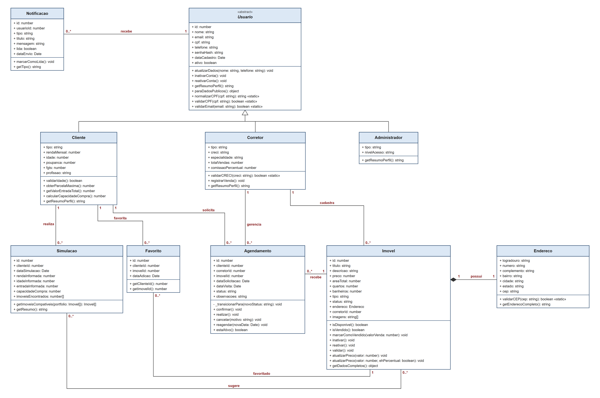
| Alteração | Motivo |
|---|---|
Associações passam a ser guardadas por identificador (ex.: clienteId, corretorId, imovelId, usuarioId) | A persistência é feita em arquivos JSON. Guardar o identificador evita duplicar objetos inteiros em cada arquivo. Os relacionamentos e as multiplicidades continuam os mesmos. |
| Métodos que buscam ou gravam outros objetos foram para a camada de serviços | Corretor.cadastrarImovel(), confirmarVisita(), Administrador.gerenciarUsuarios(), Agendamento.validarAgendamento(), Cliente.listarFavoritos(), Usuario.autenticar() e semelhantes precisam acessar vários repositórios. Eles foram implementados nos services (ex.: ImovelService, AgendamentoService, AuthService), para que as classes de domínio não dependam dos arquivos. |
Simulacao.calcularCapacidade() incorporado a Cliente.calcularCapacidadeCompra() | O cálculo depende apenas dos dados do cliente (renda, idade, poupança e FGTS); a simulação registra o resultado. |
| Novos métodos de domínio | Usuario: reativarConta(), getResumoPerfil(), paraDadosPublicos(), normalizarCPF(), validarCPF(), validarEmail(); Corretor.registrarVenda(); Imovel: isVendido(), reativar(), validar() e a sobrecarga de atualizarPreco(); Agendamento: _transicionarPara() (privado) e estaAtivo(). |
Favorito.getCliente()/getImovel() passam a getClienteId()/getImovelId() | Consequência da associação por identificador. |
Atributo tipo nas subclasses de Usuario | Indica o perfil (CLIENTE, CORRETOR, ADMINISTRADOR) e permite recriar o objeto da subclasse correta ao ler o arquivo JSON. |
Usuario (superclasse abstrata): representa qualquer pessoa que acessa o sistema. Centraliza dados de identificação, autenticação e controle da conta. É a base da herança de Cliente, Corretor e Administrador e não pode ser instanciada diretamente.
Cliente: representa o comprador de imóveis. Acrescenta dados financeiros e pessoais utilizados nas simulações e calcula a própria capacidade de compra.
Corretor: representa o profissional imobiliário credenciado pelo CRECI, responsável pelo seu portfólio de imóveis e pelo tratamento das solicitações de visita.
Administrador: representa o gestor da plataforma, com permissões de gerenciamento de usuários, auditoria, visualização global de imóveis e geração de relatórios.
Imovel: representa uma propriedade imobiliária. Armazena características, preço, status, endereço, corretor responsável e imagens, além das operações de disponibilidade, venda, inativação e reajuste de preço.
Endereco: representa os dados de localização do imóvel. Foi modelada como composição, pois o endereço faz parte do imóvel e é criado junto com ele.
Simulacao: registra uma simulação financeira realizada pelo cliente, mantendo os dados informados, a capacidade de compra calculada e os imóveis compatíveis.
Agendamento: representa uma solicitação de visita e controla seu ciclo de vida (Pendente → Confirmado → Realizado, ou Cancelado), vinculando cliente, corretor e imóvel.
Favorito: representa a relação entre um cliente e um imóvel marcado como favorito, armazenando também a data de adição.
Notificacao: representa mensagens de eventos relevantes do sistema destinadas aos usuários, como alterações em agendamentos e novos imóveis compatíveis.
Usuario — Cliente / Corretor / Administrador: generalização/especialização. Cliente, Corretor e Administrador são especializações de Usuario e herdam seus dados e comportamentos básicos, diferenciando-se pelas responsabilidades específicas de cada perfil.
Imovel — Endereco: composição, porque o endereço é parte integrante do imóvel: é criado dentro do construtor de Imovel e não existe separadamente. Um imóvel possui um endereço.
Corretor — Imovel: associação, porque o corretor cadastra e é responsável pelos imóveis de seu portfólio. Um corretor pode possuir vários imóveis, e cada imóvel possui um corretor responsável.
Cliente — Simulacao: associação, porque cada simulação é realizada por um cliente. Um cliente pode realizar várias simulações ao longo do tempo.
Simulacao — Imovel: associação, porque a simulação sugere vários imóveis compatíveis com a capacidade de compra calculada, e um mesmo imóvel pode aparecer em diferentes simulações.
Cliente — Agendamento: associação, porque o cliente solicita visitas. Um cliente pode possuir vários agendamentos, e cada agendamento pertence a um cliente.
Corretor — Agendamento: associação, porque o corretor responsável recebe e gerencia as solicitações de visita. Um corretor pode tratar vários agendamentos, e cada agendamento está vinculado a um corretor.
Imovel — Agendamento: associação, porque o agendamento representa uma visita a um imóvel específico. Um imóvel pode receber vários agendamentos ao longo de sua comercialização.
Cliente — Favorito: associação, porque os favoritos registram quais imóveis foram salvos por cada cliente. Um cliente pode possuir vários favoritos.
Imovel — Favorito: associação, porque um imóvel pode ser favoritado por diferentes clientes, sendo cada registro de Favorito responsável por representar essa relação.
Usuario — Notificacao: associação, porque as notificações possuem um usuário destinatário. Um usuário pode receber várias notificações.
| Relacionamento | Multiplicidade | Explicação |
|---|---|---|
| Usuario — Cliente / Corretor / Administrador | herança | A especialização indica que cada objeto das subclasses pertence à hierarquia de Usuario; não é uma associação com multiplicidade convencional. |
| Imovel — Endereco | 1 : 1 | Cada imóvel possui exatamente um endereço, e cada Endereco pertence ao imóvel que o compõe. |
| Corretor — Imovel | 1 : 0..* | Um corretor pode ter nenhum ou vários imóveis; cada imóvel possui um corretor responsável. |
| Cliente — Simulacao | 1 : 0..* | Um cliente pode não ter simulações ou ter várias; cada simulação pertence a um cliente. |
| Simulacao — Imovel | 0..* : 0..* | Uma simulação pode sugerir nenhum ou vários imóveis, e um imóvel pode aparecer em várias simulações. |
| Cliente — Agendamento | 1 : 0..* | Um cliente pode ter nenhum ou vários agendamentos; cada agendamento pertence a um cliente. |
| Corretor — Agendamento | 1 : 0..* | Um corretor pode gerenciar nenhum ou vários agendamentos; cada agendamento possui um corretor responsável. |
| Imovel — Agendamento | 1 : 0..* | Um imóvel pode ter nenhum ou vários agendamentos; cada agendamento refere-se a um imóvel. |
| Cliente — Favorito | 1 : 0..* | Um cliente pode não ter favoritos ou ter vários; cada favorito pertence a um cliente. |
| Imovel — Favorito | 1 : 0..* | Um imóvel pode não ter favoritos ou ser favoritado por vários clientes; cada favorito refere-se a um imóvel. |
| Usuario — Notificacao | 1 : 0..* | Um usuário pode receber nenhuma ou várias notificações; cada notificação possui um destinatário. |
getResumoPerfil() é definido em Usuario e sobrescrito em Cliente, Corretor e Administrador.Imovel.atualizarPreco() aparece com duas assinaturas.confirmar(), realizar() e cancelar(), que usam o método privado (-) _transicionarPara(); paraDadosPublicos() oculta o hash da senha.validarCPF, validarEmail, validarCRECI, validarCEP).| Regra | Onde está implementada |
|---|---|
| RN01 | Cliente.obterParcelaMaxima() e Cliente.calcularCapacidadeCompra() |
| RN02 | ImovelService.marcarComoVendido() verifica as visitas em aberto; Imovel.marcarComoVendido() muda o status |
| RN03 | Imovel.isDisponivel(), verificado em AgendamentoService.solicitar() e confirmar() |
| RN04 | AgendamentoService.solicitar(), usando Agendamento.estaAtivo() |
| RN05 | Cliente.validarIdade() |
| RN06 | ImovelService._verificarTitularidade() |
| RN07 | Rotas de agendamento aceitam apenas os perfis CLIENTE e CORRETOR (requireRole) |
| RN08 | Simulacao.getImoveisCompativeis() |
| RN09 | AgendamentoService.solicitar() |
| RN10 | AgendamentoService._notificarEnvolvidos(), que cria uma Notificacao para o cliente e outra para o corretor |
| RN11 | Corretor.validarCRECI() (estático) |
| RN12 | Imovel.inativar(); ImovelService.listarDisponiveis() e Simulacao.getImoveisCompativeis() só retornam imóveis disponíveis |
O diagrama consolida as dez classes definidas para o LUNAR INTEL e corresponde ao código entregue. A estrutura prioriza a separação de responsabilidades e os conceitos de Programação Orientada a Objetos solicitados na disciplina, mantendo as relações necessárias para representar usuários, imóveis, simulações, visitas, favoritos e notificações.
| Item | Onde encontrar |
|---|---|
| Aplicação web funcionando | {{LINK_APP}} |
| Repositório (código completo) | {{LINK_REPO}} |
| Código das classes | pasta src/models do repositório |
| Mecanismo de persistência | pasta src/repositories e arquivos data/*.json |
| Tratamento de exceções | src/errors/AppError.js e src/middlewares/errorHandler.js |
| Demonstração das telas | item 9 deste documento e pasta docs/telas |
| Diagrama de classes atualizado | Atividade 4 deste documento e pasta docs |
Contas de teste (senha de todas: 123456): administrador admin@lunarintel.com; corretores bruno@lunarintel.com e jose@lunarintel.com; clientes cliente@lunarintel.com e marina@lunarintel.com.
Back-end em Node.js com Express; front-end em HTML, CSS e JavaScript; dados persistidos em arquivos JSON. O código está dividido em camadas (RNF04):
| Pasta | Responsabilidade |
|---|---|
src/models | As 10 classes do domínio (as mesmas do diagrama) |
src/services | Regras de negócio que envolvem mais de um objeto (agendar visita, vender imóvel, relatório) |
src/repositories | Leitura e gravação dos arquivos JSON |
src/routes | Endpoints da API usados pelas telas |
src/middlewares | Autenticação, permissão por perfil, auditoria e tratamento de erros |
src/errors | Hierarquia de exceções |
public | Telas web (login, cadastro e uma página por perfil) |
tests | 48 testes automatizados |
Caminho de uma requisição: tela → rota → middleware de login/perfil → service → model + repository → arquivo JSON.
Onde: método getResumoPerfil(), definido em Usuario (src/models/Usuario.js) e sobrescrito em Cliente, Corretor e Administrador.
O método paraDadosPublicos() de Usuario chama this.getResumoPerfil() sem saber qual é a subclasse. Em tempo de execução, cada objeto executa a sua versão. O resultado aparece na barra superior de todas as telas após o login.
// Usuario.js
paraDadosPublicos() {
const { senhaHash, ...dadosPublicos } = this;
return { ...dadosPublicos, resumoPerfil: this.getResumoPerfil() };
}
// Cliente.js
getResumoPerfil() { return `${this.nome} | Renda mensal: R$ ${this.rendaMensal.toFixed(2)}`; }
// Corretor.js
getResumoPerfil() { return `${this.nome} | CRECI ${this.creci} | ${this.totalVendas} venda(s)`; }
// Administrador.js
getResumoPerfil() { return `${this.nome} (Administrador, nível ${this.nivelAcesso})`; }
Também há polimorfismo na hierarquia de repositórios (todos estendem JsonRepository) e na de exceções (todas estendem AppError e são tratadas de forma única pelo errorHandler).
Onde: Imovel.atualizarPreco() (src/models/Imovel.js).
JavaScript não permite declarar dois métodos com o mesmo nome. A sobrecarga foi representada por parâmetros: o mesmo método tem duas formas de chamada, com comportamentos diferentes conforme os argumentos.
atualizarPreco(valor, ehPercentual = false) {
if (typeof valor !== 'number' || Number.isNaN(valor)) throw new ValidationError('Preco invalido.');
const novoPreco = ehPercentual ? this.preco * (1 + valor / 100) : valor;
if (novoPreco <= 0) throw new ValidationError('O preco do imovel precisa ser maior que zero.');
this.preco = Math.round(novoPreco * 100) / 100;
}
imovel.atualizarPreco(500000); // forma 1: define o novo preço
imovel.atualizarPreco(10, true); // forma 2: reajusta o preço atual em 10%
No diagrama, as duas assinaturas aparecem separadamente: atualizarPreco(valor: number) e atualizarPreco(valor: number, ehPercentual: boolean).
As regras RN01 a RN12 (Atividade 2) estão implementadas nos locais indicados na Atividade 4, item 7. Durante a implementação foram acrescentadas regras complementares:
| Regra | Descrição | Onde |
|---|---|---|
| RN13 | Imóvel vendido fica congelado (não pode ser editado nem inativado); só imóvel inativo pode ser reativado | Imovel.inativar(), Imovel.reativar(), ImovelService.atualizar() |
| RN14 | A data da visita precisa ser válida e no futuro (pedido e reagendamento) | AgendamentoService._validarDataVisita() |
| RN15 | O cliente pode cancelar as próprias visitas, e o corretor é avisado | AgendamentoService.cancelarPeloCliente() |
| RN16 | Clientes compatíveis são avisados quando um imóvel é cadastrado ou reativado | ImovelService._avisarClientesCompativeis() |
| RN17 | Só é possível favoritar imóvel disponível, sem repetir | FavoritoService.adicionar() |
O ciclo de vida da visita é controlado pela própria classe Agendamento, por uma tabela de transições válidas: Pendente → Confirmado ou Cancelado; Confirmado → Realizado ou Cancelado; Realizado e Cancelado são estados finais. Qualquer outra transição gera BusinessRuleError.
Os valores das regras (30%, 80%, 18 a 70 anos, 3 visitas, 7 dias, juros de 1% a.m. e prazo de 360 meses) ficam centralizados em src/config/constants.js.
A persistência é feita por serialização em JSON (RNF05). Cada entidade é gravada em um arquivo na pasta data/ (usuarios.json, imoveis.json, agendamentos.json, simulacoes.json, favoritos.json, notificacoes.json, auditoria.json).
JsonRepository implementa o CRUD (create, findAll, findById, update, delete) e grava o arquivo após cada alteração. Cada entidade tem seu repositório, que estende JsonRepository (herança).tipo: "CORRETOR" volta como instância de Corretor, com todos os seus métodos; o endereço de um imóvel volta como instância de Endereco.PersistenceError, com mensagem simples para o usuário; o detalhe técnico fica apenas no log do servidor.Todas as exceções do sistema herdam de AppError, que guarda a mensagem e o código HTTP. O middleware errorHandler transforma qualquer exceção em uma resposta com mensagem compreensível, exibida na tela em um alerta. Erros não previstos recebem a mensagem genérica "Ocorreu um erro inesperado. Tente novamente mais tarde.", sem stacktrace (RNF06).
| Situação exigida | Exceção (HTTP) | Exemplo no sistema e mensagem exibida |
|---|---|---|
| Dados obrigatórios não informados | ValidationError (400) | Pedir visita sem data: "Imovel e data da visita sao obrigatorios." |
| Tentativa de cadastrar informação inválida | ValidationError (400) | CPF com dígitos verificadores errados, CRECI fora do padrão, CEP inválido, idade fora de 18–70: "Idade fora da faixa permitida para simulacao (18 a 70 anos)." |
| Registro não encontrado | NotFoundError (404) | Abrir imóvel ou visita inexistente: "Registro nao encontrado." |
| Falha ao salvar dados | PersistenceError (500) | "Nao foi possivel salvar os dados. Nenhuma alteracao foi feita." |
| Falha ao carregar dados | PersistenceError (500) | Arquivo corrompido ou inacessível: "Nao foi possivel carregar os dados. Tente novamente em instantes." |
| Operação não permitida | ForbiddenError (403) / AuthError (401) | Corretor editando imóvel de outro corretor (RN06): "Voce so pode alterar imoveis do seu proprio portfolio."; usuário bloqueado perde o acesso imediatamente. |
| Ação em estado incorreto | BusinessRuleError (422) | Realizar uma visita cancelada: "Nao e possivel transitar de "Cancelado" para "Realizado"."; vender imóvel com visita em aberto (RN02); editar imóvel vendido (RN13). |
Exemplo equivalente ao da venda do enunciado — uma visita não pode ser solicitada quando:
ValidationError;ValidationError (RN14);BusinessRuleError (RN03);BusinessRuleError (RN04);BusinessRuleError (RN09);ForbiddenError (RN07).| Exigência | Como foi atendida |
|---|---|
| Páginas ou telas web | Login, cadastro, painel do cliente, painel do corretor e painel do administrador |
| Formulários | Login, cadastro (cliente ou corretor), simulação, filtros do catálogo, pedido de visita, cadastro/edição de imóvel, reagendamento, edição de perfil, troca e recuperação de senha |
| Navegação | Redirecionamento por perfil após o login, abas em cada painel, modais de detalhe e logout |
| Eventos ou ações do usuário | Simular, filtrar, favoritar, pedir/cancelar visita, confirmar/reagendar/realizar visita, vender/inativar/reativar imóvel, bloquear usuário, exportar relatório em CSV |
| Validação dos dados | Validação na tela (campos obrigatórios, mínimos) e, principalmente, no servidor (CPF, e-mail, CEP, CRECI, idade, preço, quartos, datas) |
| Mensagens de erro | Alertas em cada formulário com a mensagem da exceção correspondente |
| Armazenamento e recuperação | Repositórios JSON com reconstrução dos objetos (item 6) |
| Auditoria (RNF07) | Cadastros, logins (inclusive os que falharam), logouts e mudanças de status são registrados com data, hora e autor; o administrador consulta na aba Auditoria |
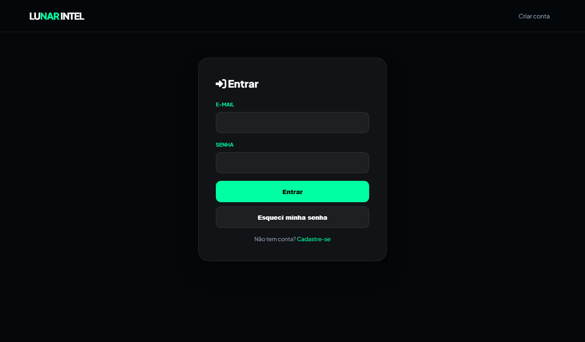
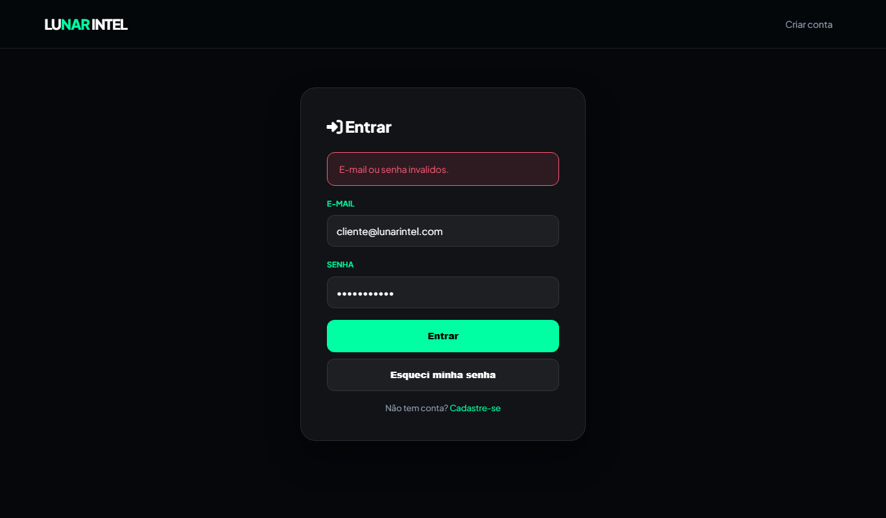
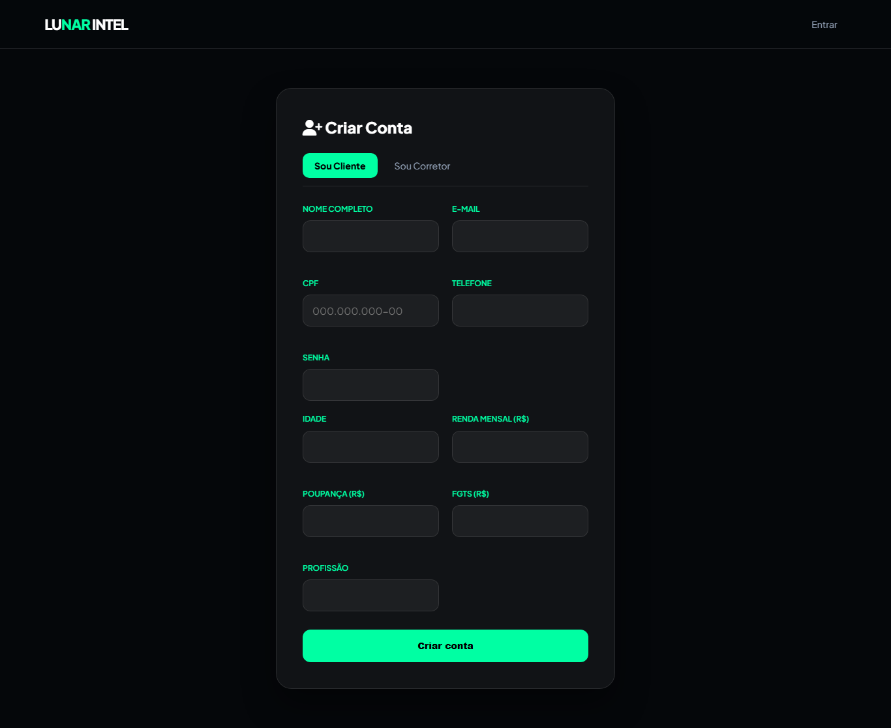
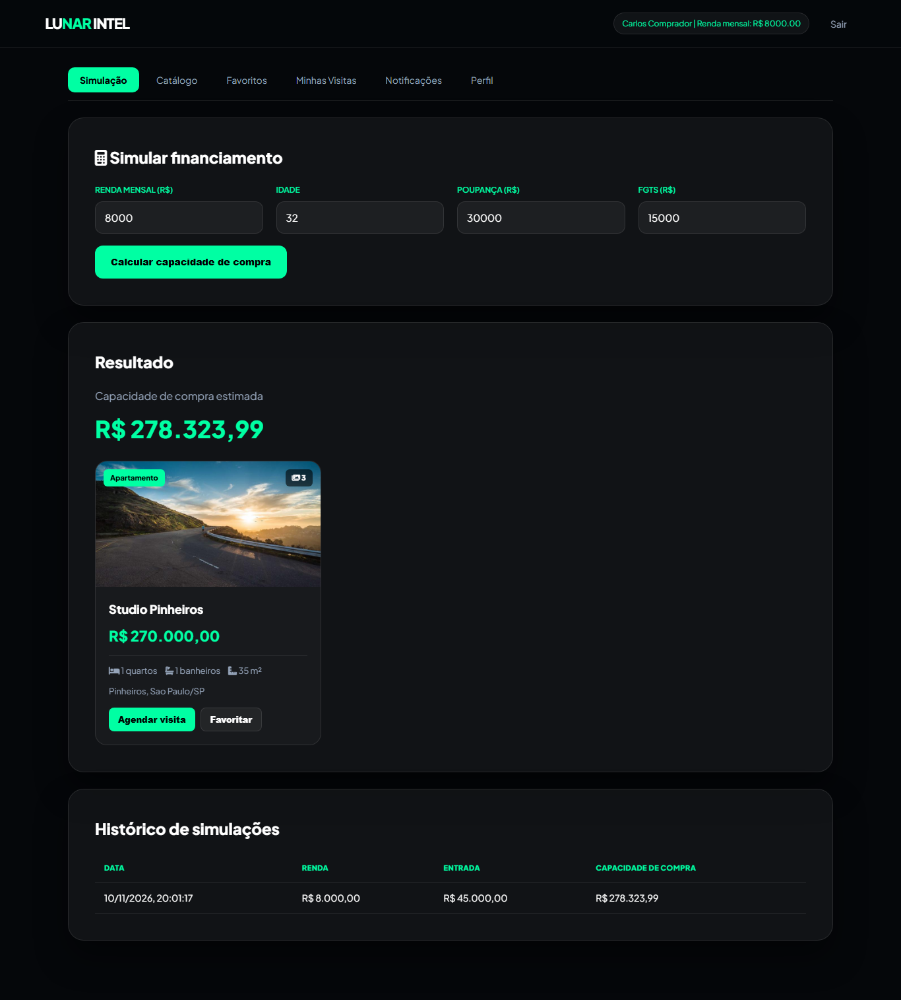
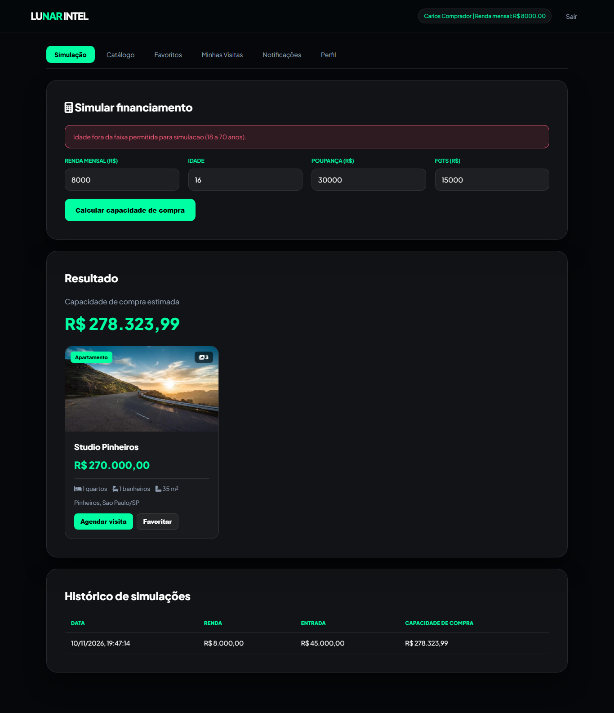
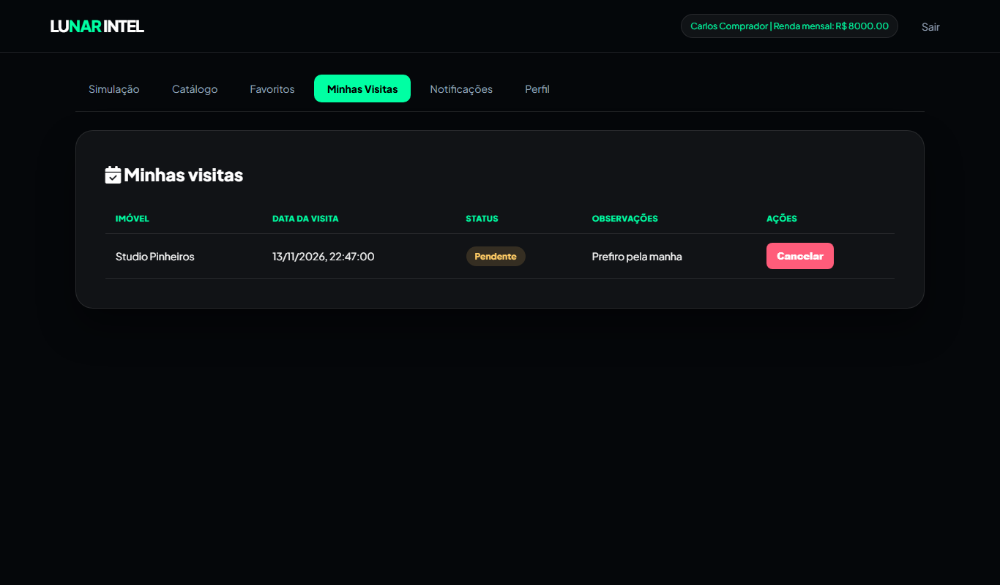
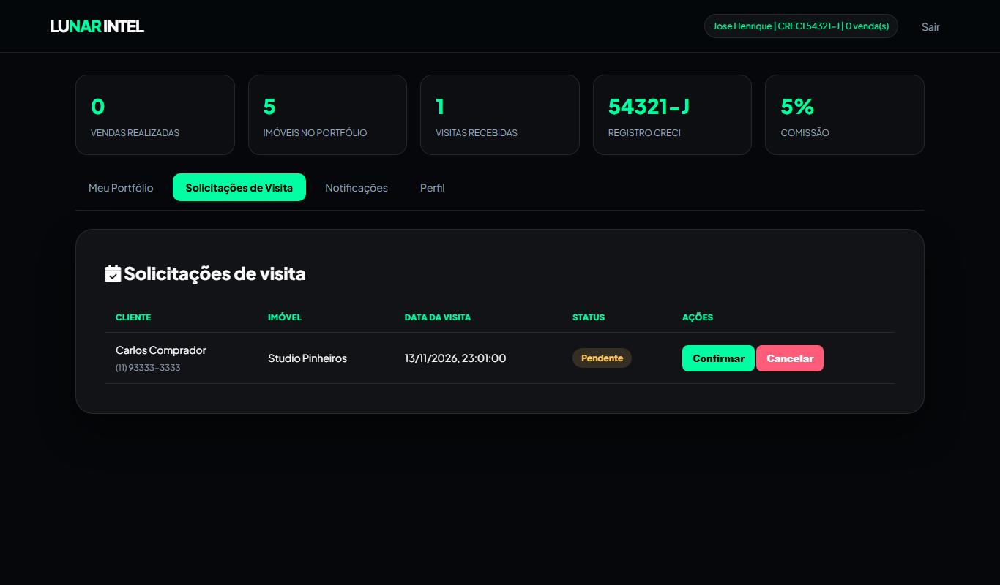
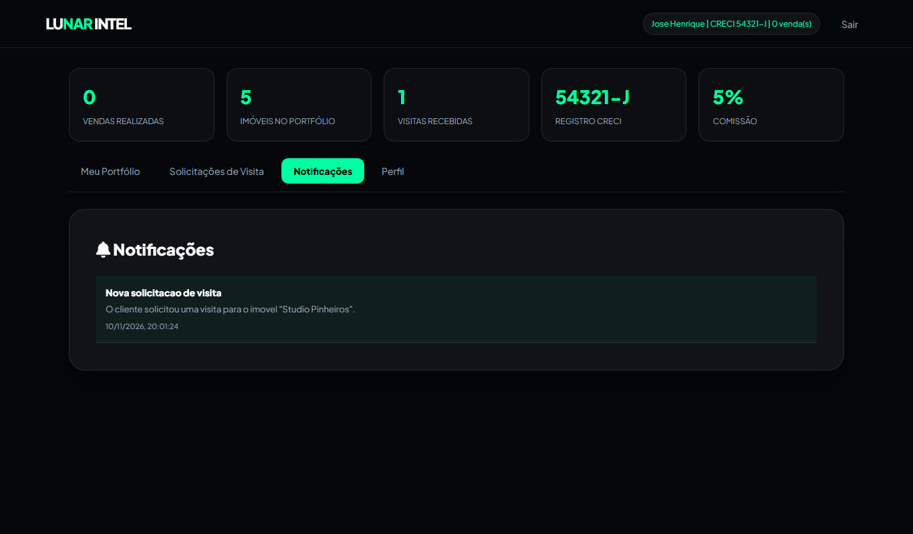
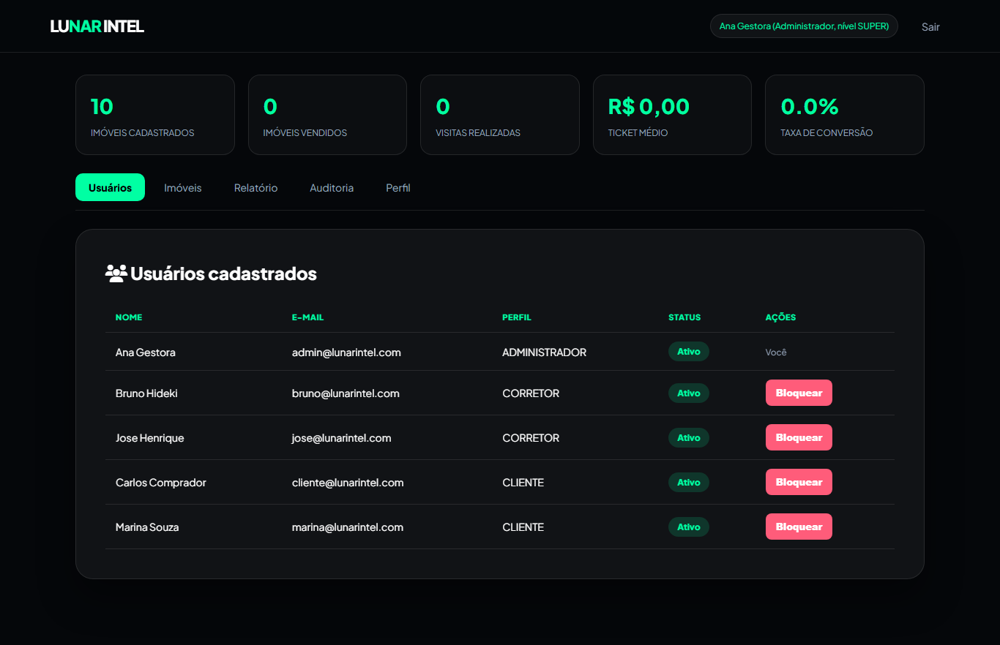
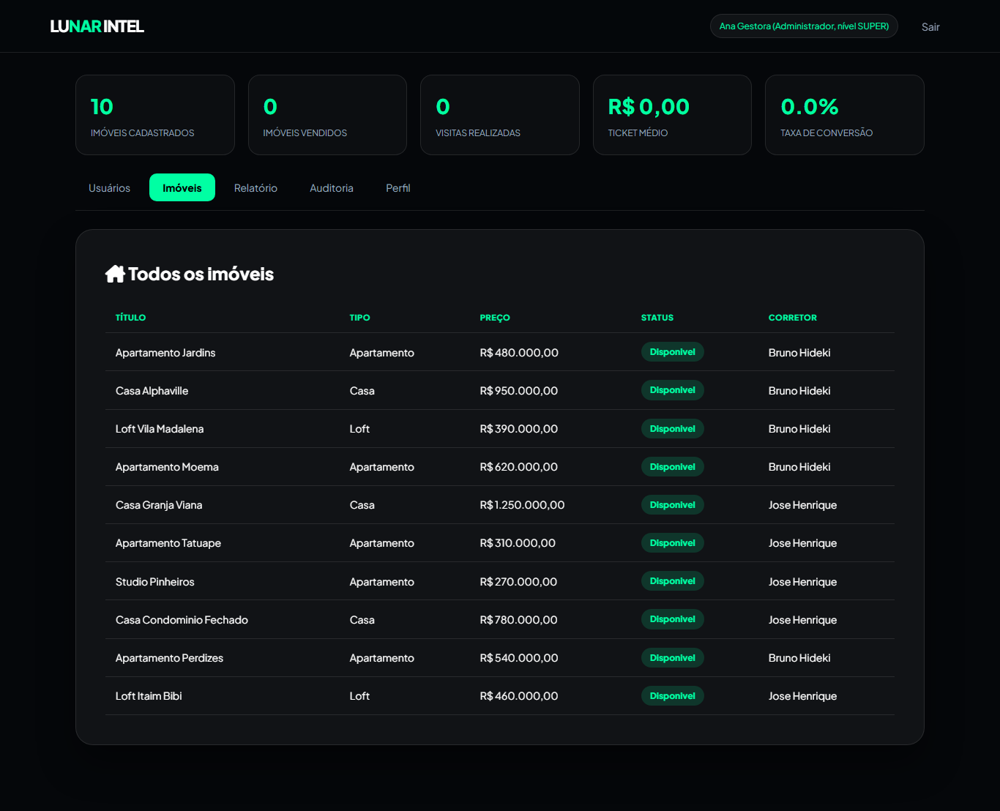
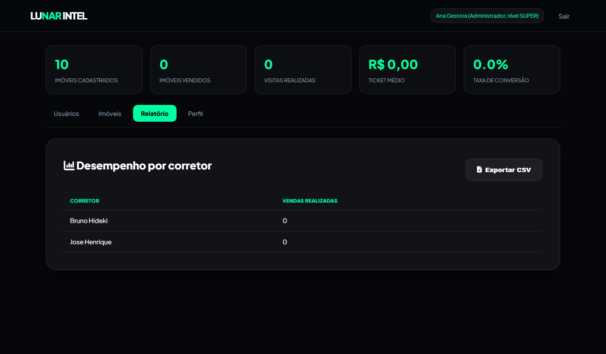
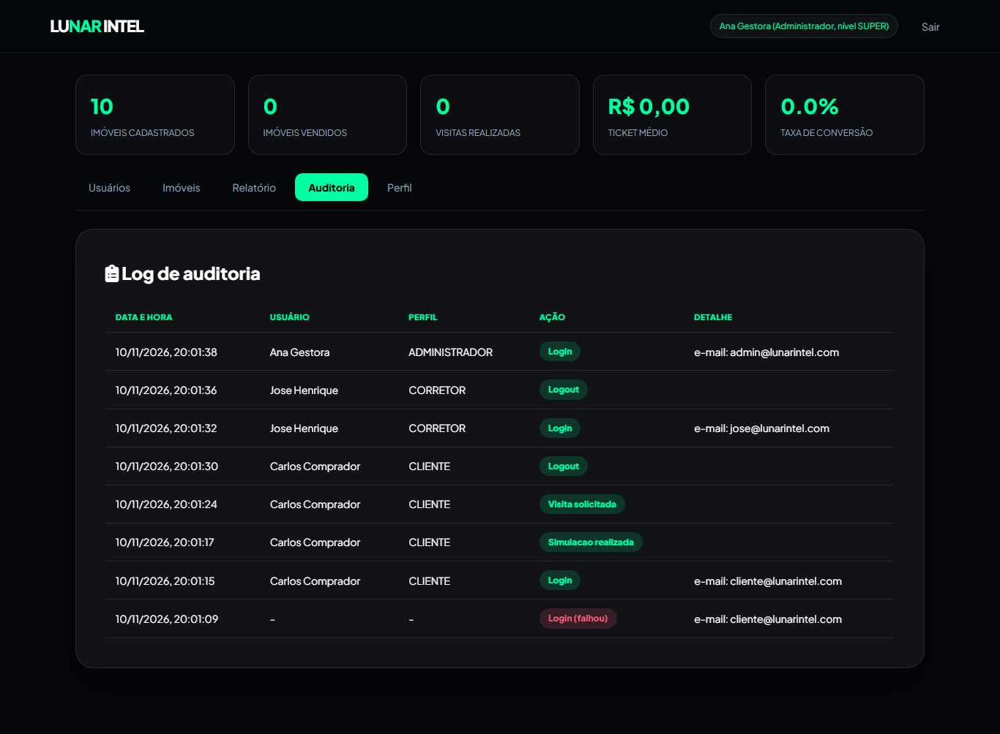
O projeto possui 48 testes automatizados (npm test), todos aprovados, que cobrem as classes de domínio (herança, polimorfismo, sobrecarga, transições de status, cálculo da capacidade de compra, validações) e as regras de negócio nos serviços (RN02, RN03, RN04, RN06, RN09, RN10, RN13, RN14, persistência, auditoria, cadastro, recuperação de senha e relatório).
npm install npm run seed # cria os dados de exemplo npm start # http://localhost:3000 npm test # testes automatizados